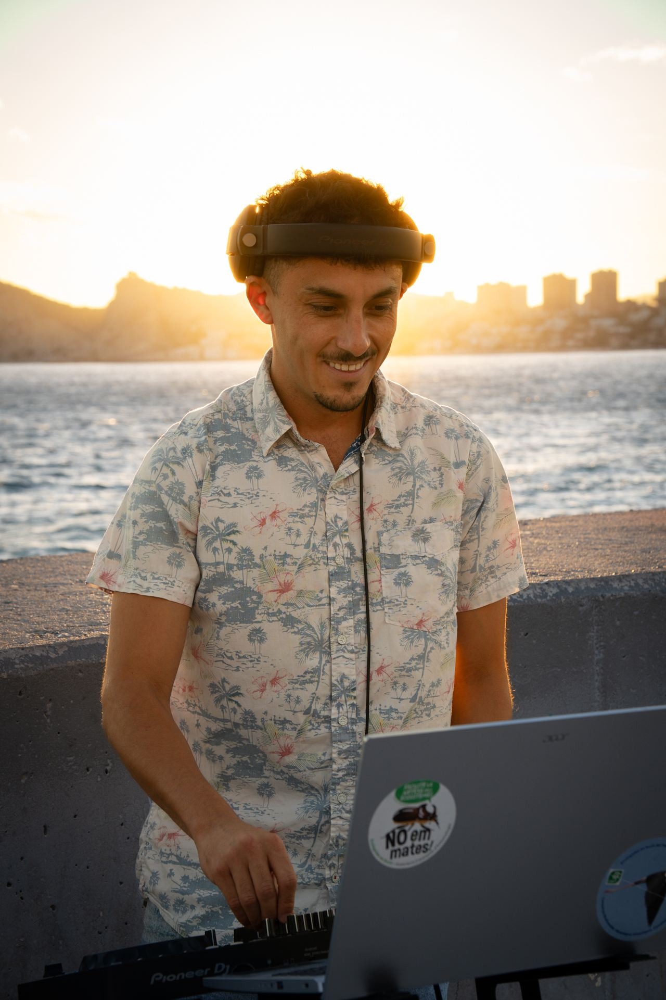
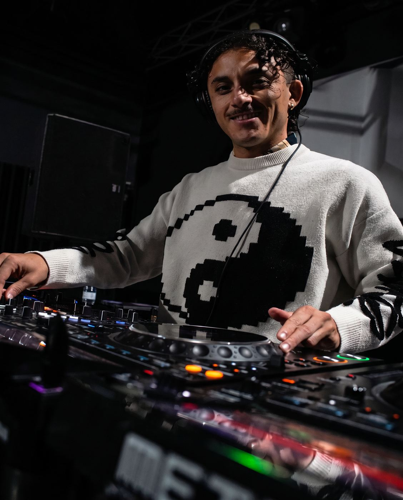
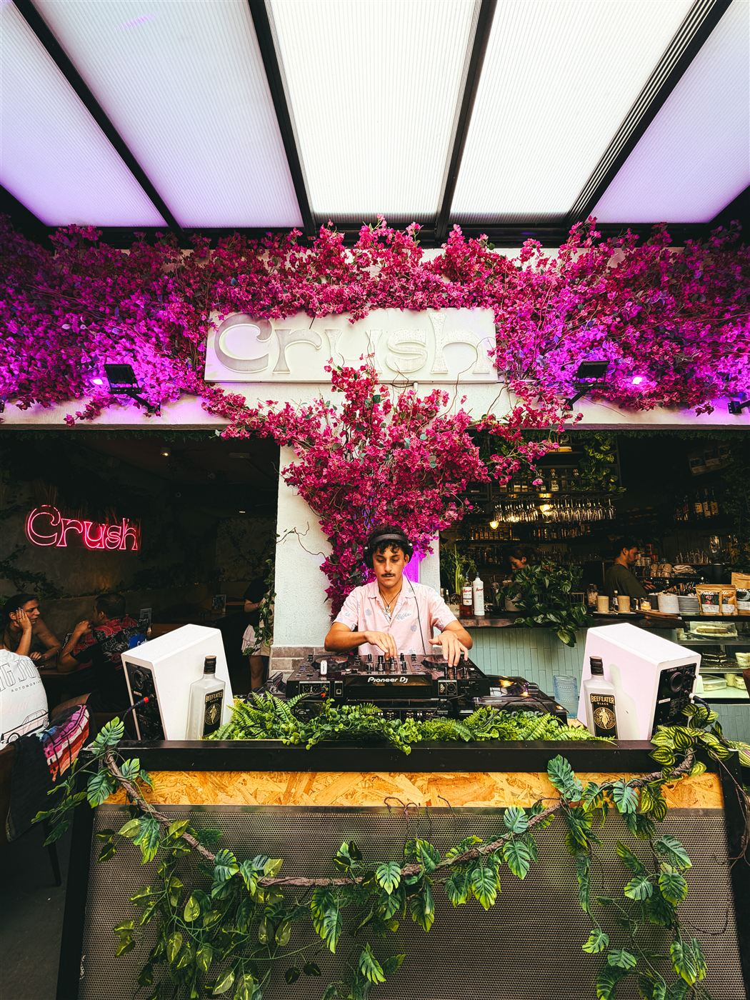
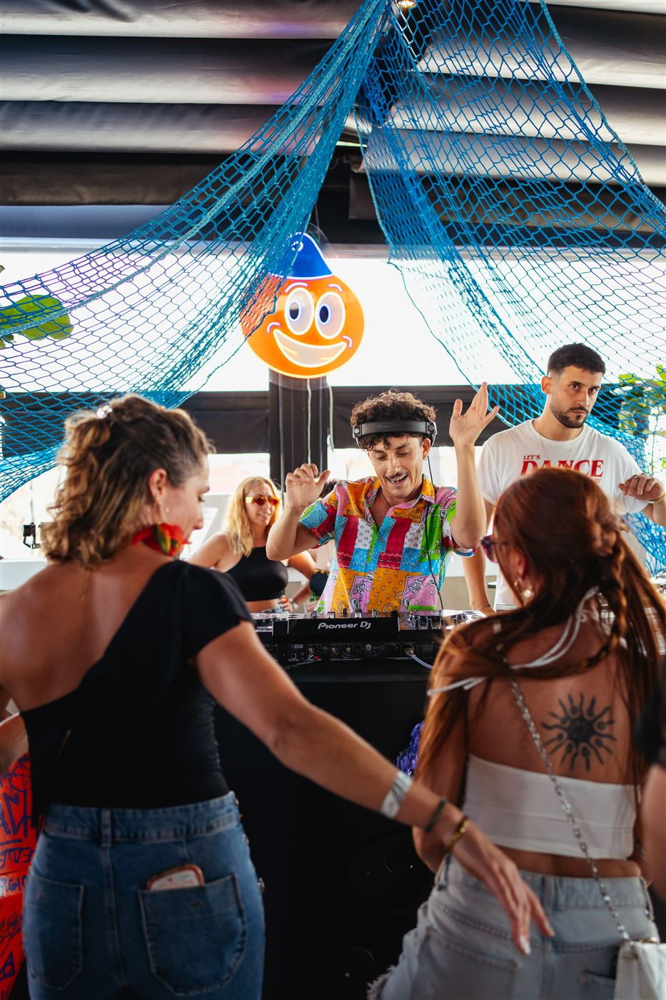
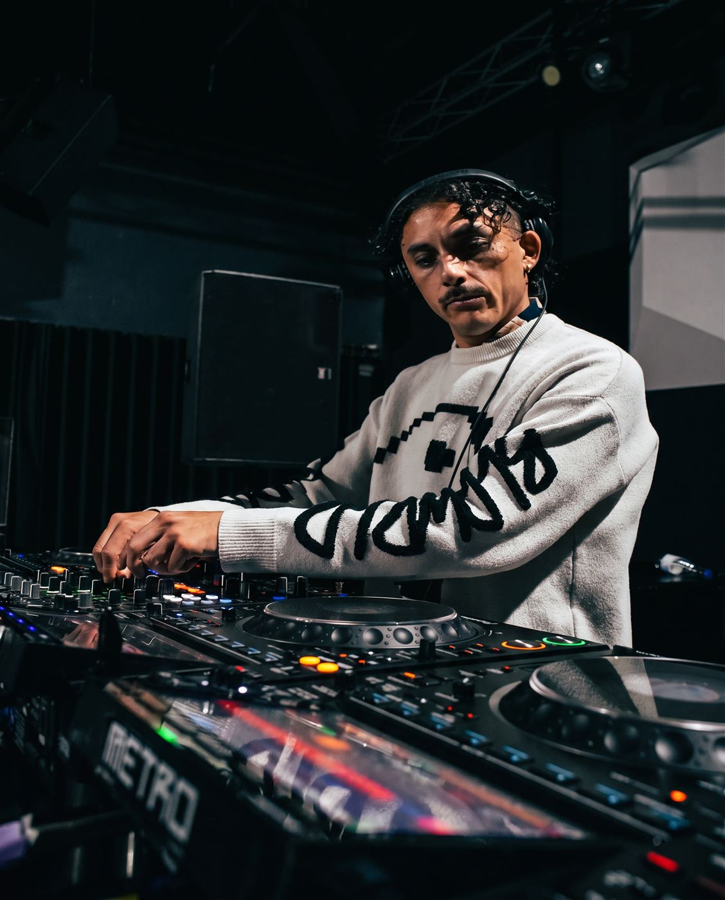
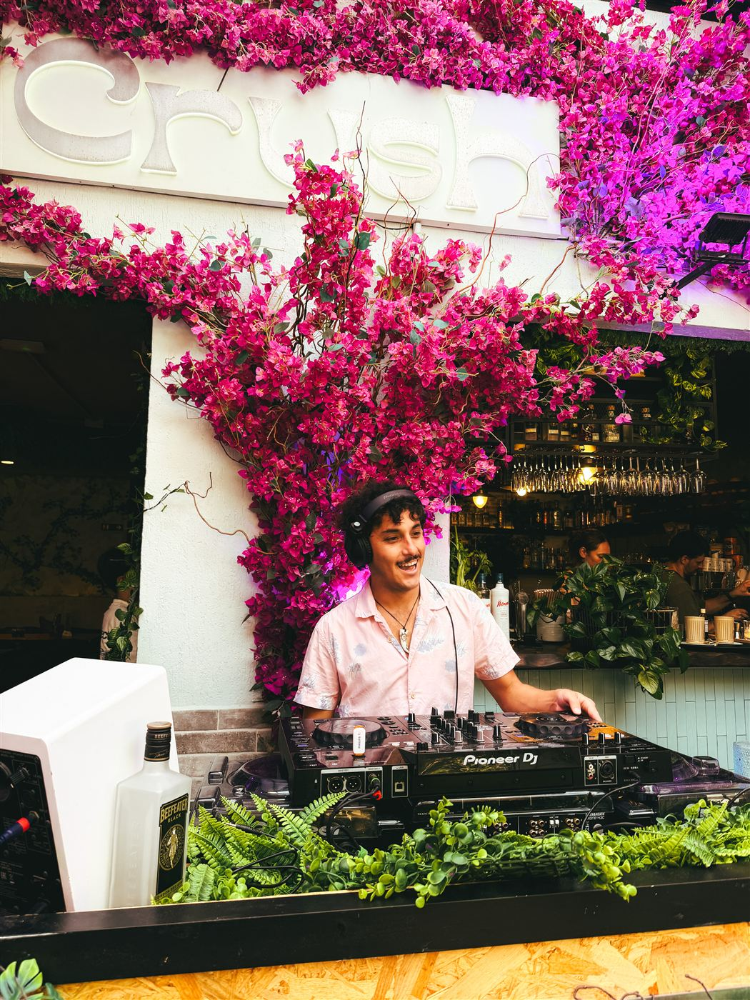

DJ · Alicante, EspañaDJ · Alicante, Spain
Residente en Crush · CadenzaResident at Crush · Cadenza

Bio
MANIJA nace de una búsqueda: hacer bailar sin perder la emoción.
MANIJA was born from a simple search: making people dance without losing the emotion.
Detrás del proyecto está Gabriel Giraldi, DJ argentino afincado en Alicante que entiende la música como expresión del alma. Su sonido no se encierra en un género: groove, luz y una pista que no se detiene.
Behind the project is Gabriel Giraldi, an Argentinian DJ based in Alicante who sees music as an expression of the soul. His sound refuses to be boxed into a genre: groove, light and a dancefloor that never stops.
MANIJA lee el momento y deja que la música fluya: sets que comienzan suaves, crecen junto al público y terminan en lo más alto. Sus sesiones grabadas al aire libre, en atardeceres, bosques y montañas, son parte de su sello.
MANIJA reads the moment and lets the music flow: sets that start soft, grow with the crowd and end at the very top. His sessions recorded outdoors, at sunsets, in forests and on mountains, are part of his signature.
Cada set se construye en directo, leyendo a la gente y al lugar. Del brunch al atardecer y del atardecer a la noche: no hay dos sets iguales, porque no hay dos momentos iguales.
Every set is built live, reading the people and the place. From brunch to sunset and from sunset to night: no two sets are the same, because no two moments are the same.
Sets que arrancan cálidos, crecen con el público y terminan en lo más alto.
Sets that start warm, grow with the crowd and finish at their peak.
Transiciones naturales, sin cortes ni etiquetas. La música va donde la pista la lleva.
Natural transitions, no cuts, no labels. The music goes where the floor takes it.
La música como puente entre cuerpo, mente y entorno. Good people find good people.
Music as a bridge between body, mind and place. Good people find good people.
En vivoLive

ResidenteResident DJ
High energy brunch · sábados y domingos
Crush, Playa de San Juan (Alicante)
High energy brunch · Saturdays & Sundays
Crush, Playa de San Juan (Alicante)


